Lavender fields, vineyards, Mediterranean beaches and golden stone — and a beautiful renovated apartment in the heart of it all.
Please call about 30 minutes before you arrive. You'll be welcomed in person, shown around, and handed the keys.
Getting online is easy. There's also an Ethernet cable at the desk for a wired connection.
The WiFi network name and password are displayed inside the apartment — on the welcome card and on the label on the back of the Bbox router. You can also simply scan the QR code on the router to connect automatically.
An Ethernet cable is provided at the dedicated workspace for fast, stable video calls.
Smart TV with Netflix and streaming apps — log in with your own account and sign out before you leave.
Spacious (80 m² / ~860 sq ft), light-filled and recently renovated, set inside the prestigious Hôtel de Guibal — the former Town Hall — with parquet floors and a view over the building's shared stone courtyard. With two bedrooms plus a sofa bed, it's ideal for families and groups of friends: very comfortable for 4–5 guests, and able to sleep 6–7 when needed (a little tighter).
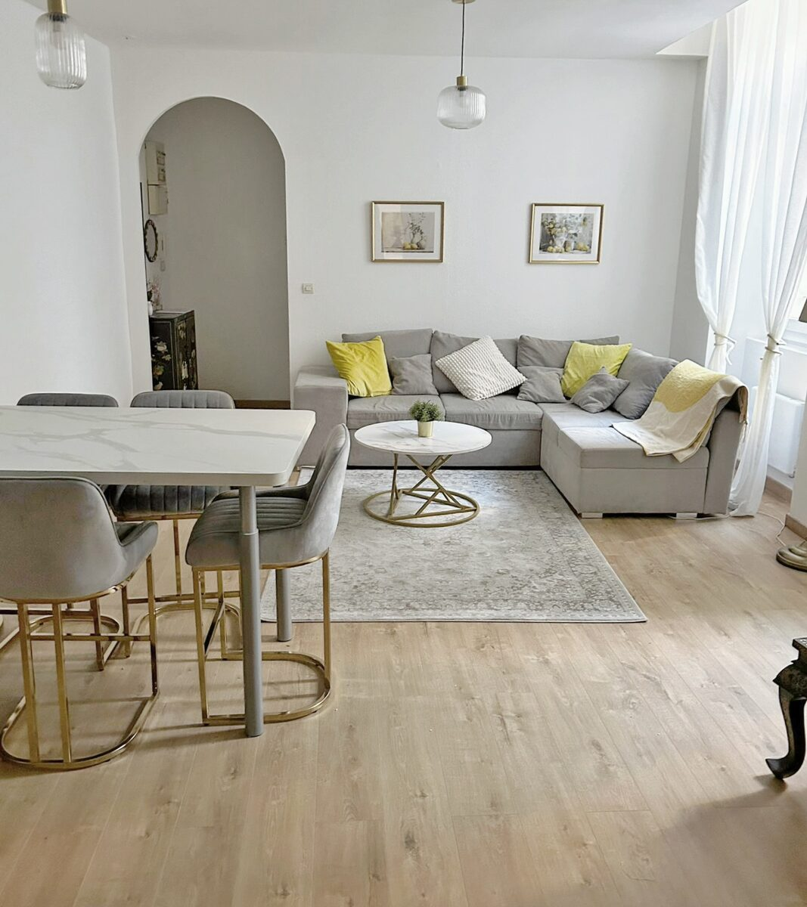
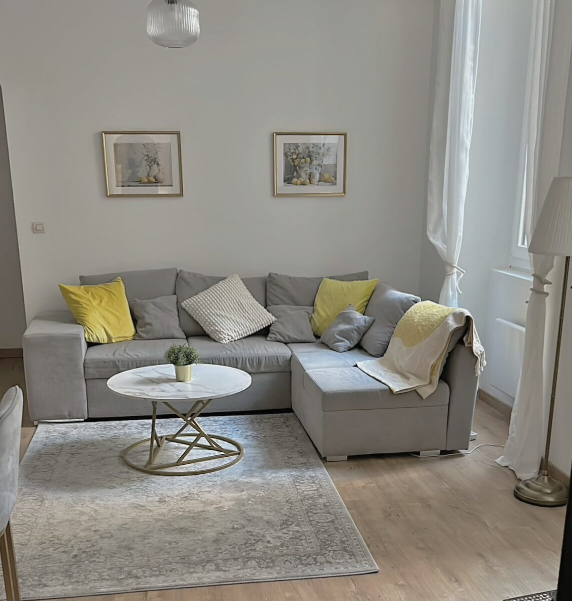
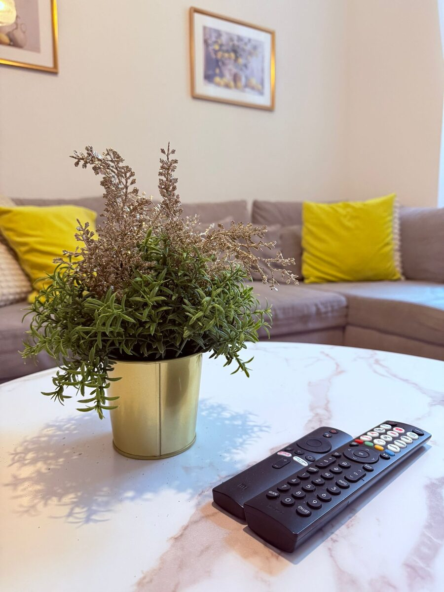
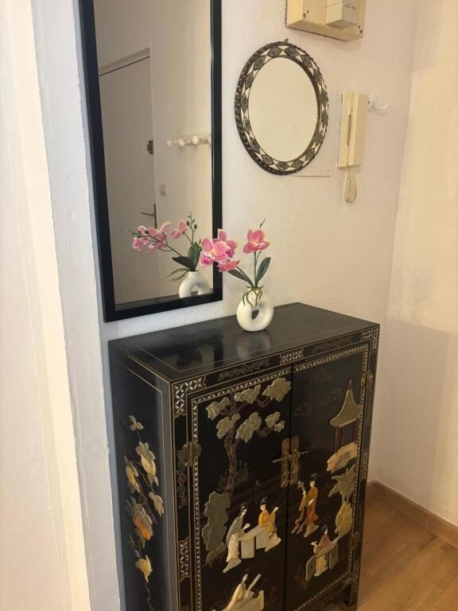
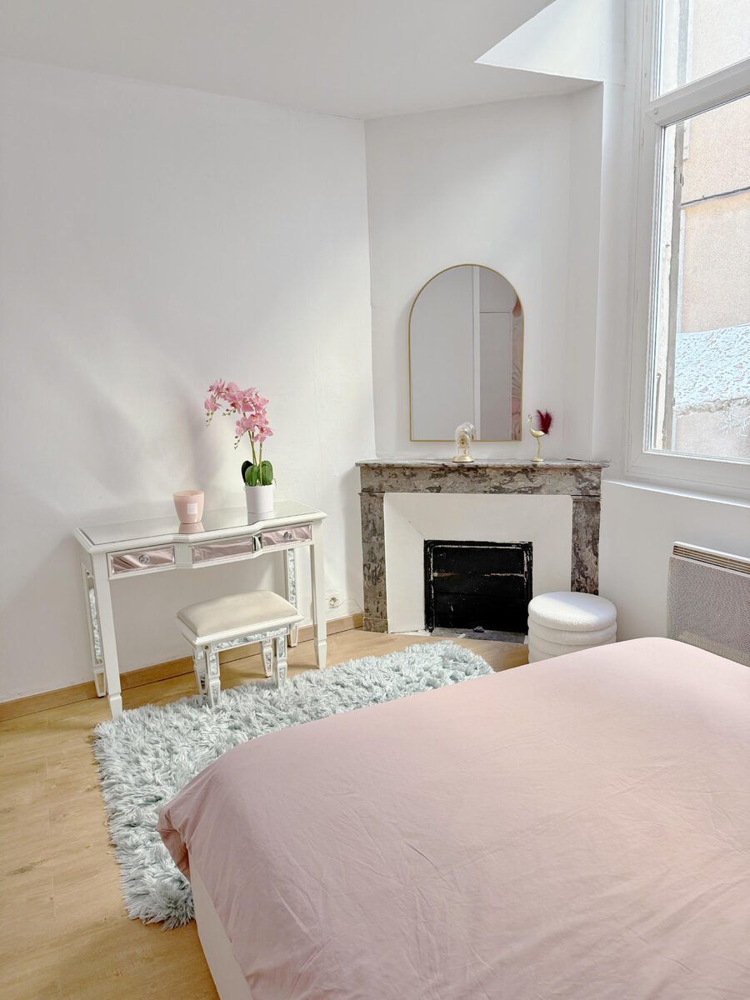
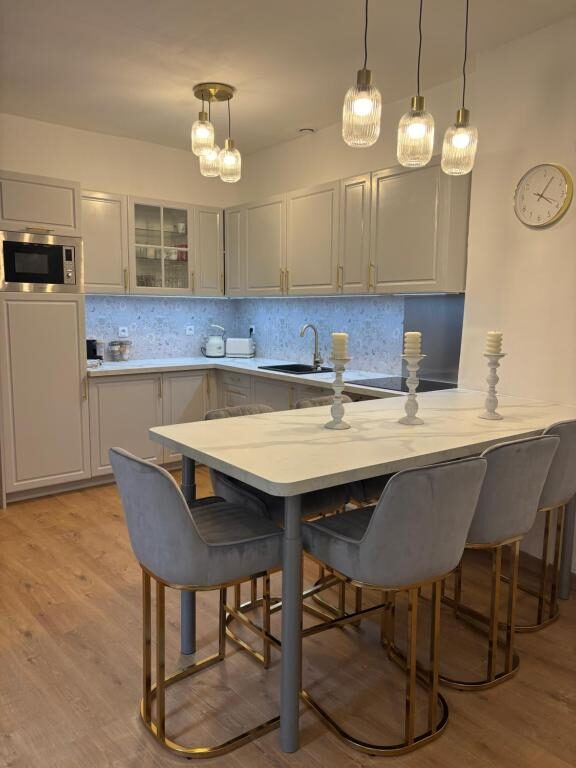
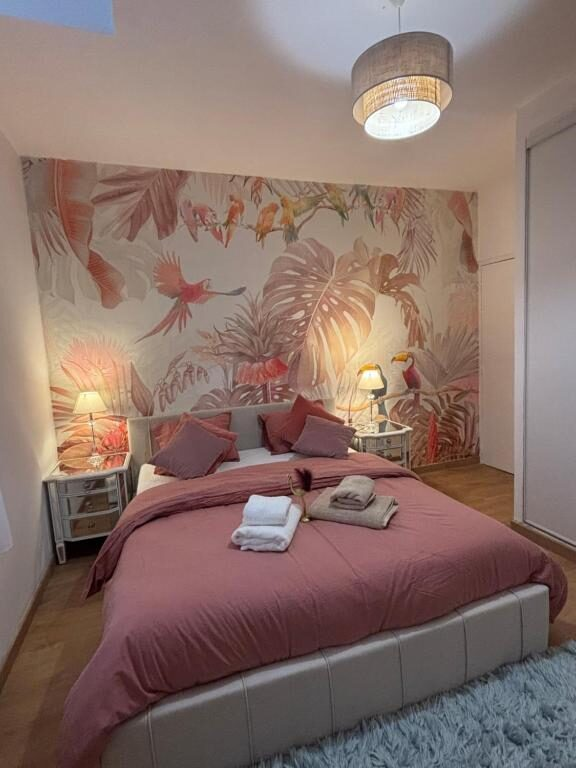
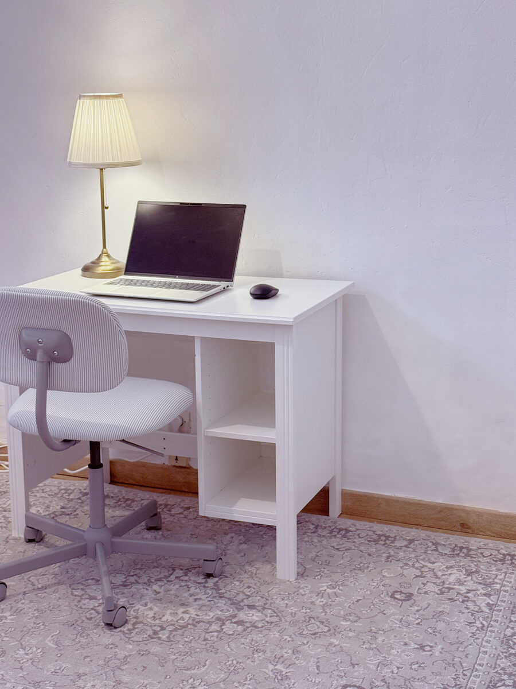
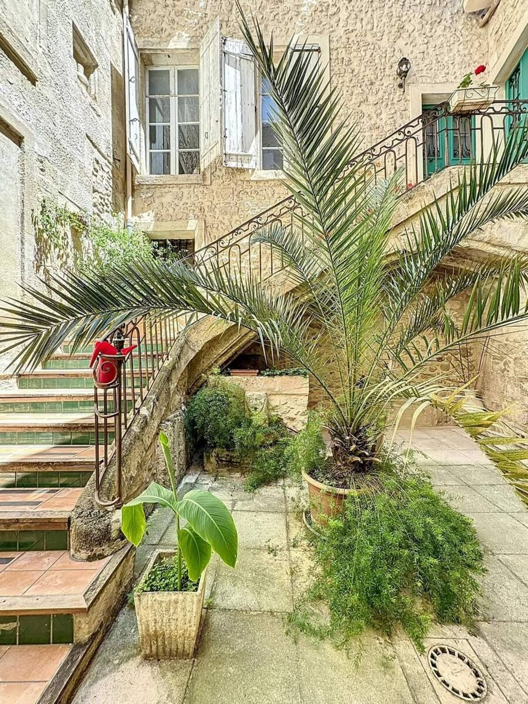
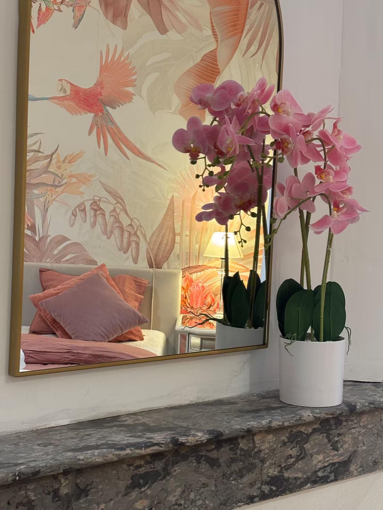
A quick guide to the appliances and where to find things. Make yourself completely at home.
A dedicated workspace is set up for teleworking — a desk with an office chair, a lamp and a monitor/screen, plus a power source and the Ethernet cable for a fast, stable connection.
You enter through the historic stone courtyard (patio) of the Hôtel de Guibal, shared with the Espace Lally art gallery. The apartment is on the 1st floor — just one staircase and you're in. Prams and strollers (baby-cars) can be left under the stairs in the patio. Please keep the street door and your apartment door closed, and keep noise low when crossing the courtyard, especially at night.
Please smoke outside only.
Sorry — no animals at this property.
This is a residential historic building — please keep noise down at night.
Treat the home with care and relax — make it your own.
29 Rue du 4 Septembre, 34500 Béziers — right next to the Mairie (Town Hall) and the Police station, in the pedestrian historic centre.
Only ~11.5 km (7 mi) southeast of the city. Direct flights from London, Brussels, Paris, Düsseldorf and more. A shuttle bus leaves about 30 minutes after each flight arrival and reaches Béziers bus station in roughly 30 minutes. Taxis are also available.
Béziers station is on the main line — direct trains to Montpellier, Carcassonne (~45 min) and beyond. About a 15-minute walk or short taxi to the apartment.
The apartment is in a pedestrian zone and there is no private parking. The nearest public car park is Parking Les Halles 2, a few minutes' walk away — approximately €14 per night. Ask Bouchra if you need help unloading on arrival.
One of France's oldest cities — known for wine culture, stunning architecture and the UNESCO-listed Canal du Midi. Mediterranean beaches, vineyards and rich gastronomy, without the crowds. Almost everything below is within a short walk.
The hilltop landmark of Béziers, rebuilt in the 13th century. Free entry, beautiful interior, and you can climb the tower for sweeping views over the Orb valley.
A spectacular "water staircase" of eight locks designed by local hero Pierre-Paul Riquet, lifting boats 21.5 m. One of the most-visited sights in the region — go at opening time to watch boats pass through.
The 1891 cast-iron market hall, fully restored in 2024. Open Tuesday–Sunday (closed Mondays). Come for fresh produce, oysters, cheese and a glass of local wine at the bar.
Wander the pretty streets of the centre — boutiques, café terraces and, in summer, the famous colourful umbrellas strung overhead.
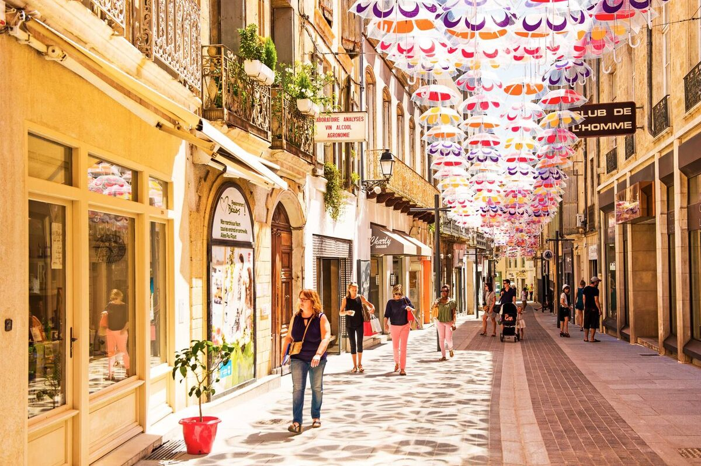
The 12th-century "Old Bridge" over the River Orb gives the postcard view of the cathedral rising above the town — best at golden hour.
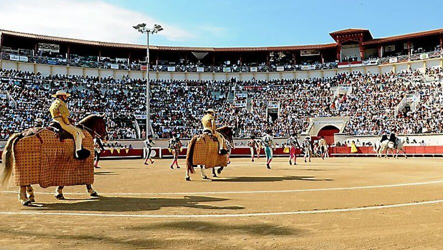
The squares of the old town are full of terraces. A few local favourites to start with — all an easy walk away.
Cosy brasserie with a lovely sidewalk terrace in the heart of the centre — regional dishes and a strong list of Southern French wines.
On pretty Place de la Madeleine beside the 15th-century church. Tradition meets creativity — the butcher's cuts and duck are local favourites.
A charming spot for classic French cuisine — lamb, foie gras and a warm, friendly atmosphere.
For a special evening — Béziers' Michelin-starred address, with refined modern tasting menus. Reserve well ahead.
For lunch, wander to the market hall and surrounding squares — tapas, oysters, pizza and local wine by the glass.
A charming Mediterranean resort with a 4 km stretch of fine sandy beach, gentle water and a lively seafront — ideal for families. Sunbeds, water sports and beach cafés in summer.
The "Venice of Languedoc" — canals, fishing port and superb seafood. Climb Mont Saint-Clair for the view and visit the Halles de Sète food market.
One of Occitanie's prettiest towns — 17th–18th-century mansions, antique shops and Molière history, surrounded by vineyards.
The legendary medieval walled fortress — one of Europe's most impressive citadels. Easy direct train from Béziers station.
Roman heritage, a grand cathedral, canals and a wonderful covered market (Les Halles de Narbonne).
One of "Les Plus Beaux Villages de France" — a medieval gem with an abbey, set in the dramatic Gorges de l'Hérault. Great for a hike and a swim.
You're in the heart of the Languedoc — the largest vineyard in the world. Half-day minibus tours leave right from Béziers, winding through the hills to family-run wineries for guided tastings of 8–10 local wines. Ask Bouchra and we'll gladly help you book one.
Rich, aromatic reds and gorgeous countryside views — one of the area's flagship appellations.
Distinctive reds grown on rocky schist soils — a favourite half-day escape from Béziers.
The local crisp white — the classic pairing with Bouzigues oysters from the nearby Étang de Thau.
Robust reds and scenic vineyards, with tastings at welcoming family estates.
The UNESCO-listed Canal du Midi runs right past Béziers, shaded by plane trees and almost completely flat — a beautiful, easy ride for all levels. Bikes can be hired locally; ask Bouchra for the nearest rental.
The most scenic stretch — passing the 9 Locks of Fonseranes, the canal-bridge over the River Orb, the Oppidum d'Ensérune and the Malpas tunnel (Europe's first navigable canal tunnel).
Follow the canal and greenways south toward Portiragnes, Vias and Agde to reach the Mediterranean beaches.
Start your ride here and watch the boats climb the famous "water staircase" — just a few minutes from the apartment.
A quick quiz on the city's past and present — tap an answer to see if you're right. No prizes, just bragging rights at dinner!